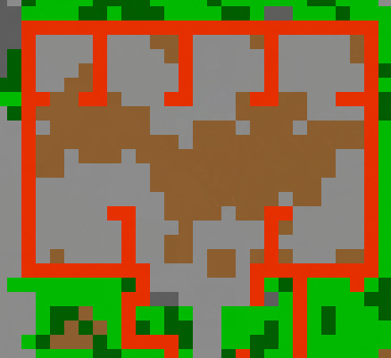

Moomoo Milk Quest
Quest de nivel alto centrada en Houndoom, un combate contra Mega Houndoom y la entrega final de una Miltank.
Inicio
Ve a la Granja de Miltank. Las coordenadas proporcionadas son 1379, 2142, 5. Habla con Carl, ubicado al lado izquierdo de la granja, y acepta ayudarlo.
Derrota 1,300 Houndoom
La guía señala dos zonas donde puede progresarse este objetivo:
Hunt normal
Wildscape (nivel 150)
Mega Houndoom
Después de completar las 1,300 derrotas, vuelve con Carl para iniciar el combate contra Mega Houndoom.
🔥 El establo en llamas
El escenario está dividido en 4 cuartos al norte. Al sur se encuentra 1 entrada con 2 cuartos a los lados.
Cada cierto porcentaje de vida que le quitas a Mega Houndoom, uno de los cuartos comienza a incendiarse. Si estás dentro de un cuarto cuando se incendia, el fuego provoca muerte instantánea y fallas el intento de la quest.
☠️ Fallar un intento
Morir en este combate no te hace perder EXP ni objetos. Solamente falla ese intento.
Puedes volver con Carl e intentarlo nuevamente todas las veces que sea necesario.
Mapa del escenario
Usa la distribución del establo para planear hacia qué cuarto te moverás conforme avance el combate.

Estrategia recomendada con Omastar
- Entra en uno de los cuartos y acomoda a Omastar en una posición donde puedas atraer a Mega Houndoom.
- Activa Protect poco antes de que Mega Houndoom esté a distancia suficiente para atacar a Omastar. No es necesario esperar a que el boss ya esté dentro del cuarto.
- Aprovecha Protect para lanzar todo el combo de Omastar y bajarle la mayor cantidad de vida posible.
- Después, deja a Omastar quieto y mueve a tu personaje hacia otro cuarto seguro mientras Protect todavía esté activo.
- Una vez que tu personaje ya esté en una zona segura, utiliza Revive y prepara nuevamente a Omastar.
- Repite el proceso moviéndote de cuarto en cuarto, evitando siempre las zonas que comiencen a arder.
Entrega una Miltank
Tras derrotar al boss, Carl solicita una Miltank. No importa cómo hayas obtenido esa Miltank: puede ser capturada por ti, comprada o regalada por otro jugador. Solo necesitas tener al Pokémon dentro de su Ball, llevarlo hasta Carl y entregarlo para completar la quest.
Recompensas
Progreso
- 20,000,000 EXP
- 4 Enhanced Normal Stones (Boost 16–20)
Objetos
- 50 Yume Balls (Unique)
- 50 Alliance Balls (Unique)
- 20 Moomoo Milks (Unique)
- Desbloqueas la compra de Moomoo Milk por 1K cada una.